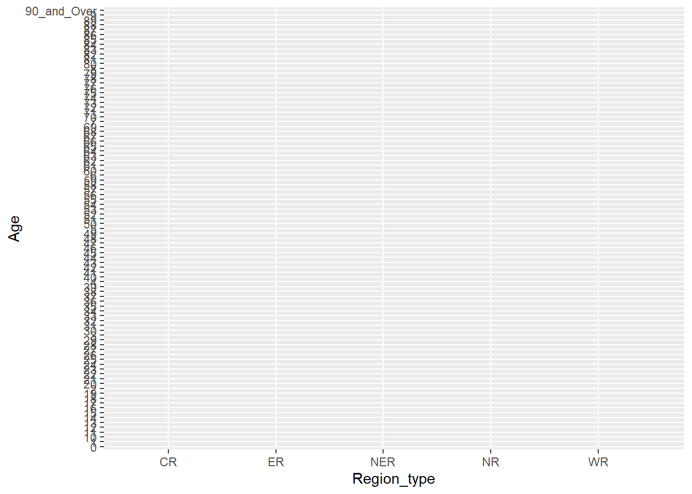

library(rmarkdown)Take-home_Exercise 1
Demographic structures and distribution of Singapore in 2024

Singapore
Demographic structures and distribution of Singapore in 2024
(by Gender and Region)
1. Overview
1.1 Background
1.2 The Data
1.3 The Task
2. Loading Libraries and Packages
The code chunk below uses p_load() of pacman package to check if packages are installed in the computer. If they are, then they will be launched into R.
pacman::p_load(ggrepel, patchwork,
ggthemes, hrbrthemes,
tidyverse, readr, ggdist,
ggridges, colorspace, knitr,
forcats, reshape2, png, grid,
dplyr, magrittr) | Library | Purpose |
|---|---|
| tidyverse |
|
| ggdist | For visualisation of distributions and uncertainity |
| ggridges | For creating density plots for visualisation of continuous distribution |
| ggrepel | For repelling overlapping text labels in plot |
| ggthemes & hrbrthemes | For customisation of plot appearance |
| patchwork | For combination and alignment of multiple plots for each visualisation |
| knitr | For elegant, flexible and fast report generation of underlying dataframes |
| forcats | For working with categorical variables |
| reshape2 | For restructuring data between “wide” and “long” formats. |
| png | For reading and writing Portable Network Graphics (PNG) image files in R |
| grid | For powerful and flexible low-level graphics system in R |
| dplyr | For data manipulation. |
| magrittr | For introducing the pipe operator %>% into R. |
3. Importing Data
sg_demo_2024 <- read_csv("respopagesex2024.csv",show_col_types = FALSE)4. Data Understanding
4.1 Viewing Data Rows and Columns using glimpse
glimpse(sg_demo_2024)Rows: 60,424
Columns: 6
$ PA <chr> "Ang Mo Kio", "Ang Mo Kio", "Ang Mo Kio", "Ang Mo Kio", "Ang Mo K…
$ SZ <chr> "Ang Mo Kio Town Centre", "Ang Mo Kio Town Centre", "Ang Mo Kio T…
$ Age <chr> "0", "0", "1", "1", "2", "2", "3", "3", "4", "4", "5", "5", "6", …
$ Sex <chr> "Males", "Females", "Males", "Females", "Males", "Females", "Male…
$ Pop <dbl> 10, 10, 10, 10, 10, 10, 10, 10, 30, 10, 20, 10, 20, 30, 30, 10, 3…
$ Time <dbl> 2024, 2024, 2024, 2024, 2024, 2024, 2024, 2024, 2024, 2024, 2024,…- The data contains data on Singapore Residents by Planning Area / Subzone, Single Year of Age and Sex, June 2024.
- The dataframe has 6 columns and 60,424 rows. Four of the columns contains categorical data type and the other two are in double/real number data type.
- The categorical attributes are: PA, SZ, Age and Sex
- The numerical attributes are: Pop, and Time.
4.2 Data Dictionary for Variables
| Category | Column Headers | Type | Description |
|---|---|---|---|
| Planning Area | PA | CHAR | 55 area names |
| Subzone | SZ | CHAR | 332 area names |
| Single Year of Age | Age | NUM | 0 to 90_and_over (in increments of 1) |
| Sex | Sex | CHAR | Males; Females |
| Resident Count | Pop | NUM | 0 to 1180 (in multiples of 10, with occasional breaks) |
| Time/Period | Time | NUM | 2024 |
Note.
- For June 2024, Planning Areas refer to areas demarcated in the Urban Redevelopment Authority’s Master Plan 2019.
- Data from 2003 onwards exclude residents who have been away from Singapore for a continuous period of 12 months or longer as at the reference period.
- The figures have been rounded to the nearest 10.
- The data may not add up due to rounding.
- Data generated on 24/9/2024.
Categorical values
# Understanding the unique data values in each column that is categorical.
get_unique_val <- function(df){lapply(df, unique)}
sg_demo_2024_cat <- sg_demo_2024[,c("PA", "SZ", "Age", "Sex")]
unique_val <- get_unique_val(sg_demo_2024_cat)
uni_val_df <- data.frame(
Values = sapply(unique_val, paste, collapse = ", ")
)
kable(uni_val_df, caption = "Unique Categories in Dataset", row.names = NA, label = NULL)| Values | |
|---|---|
| PA | Ang Mo Kio, Bedok, Bishan, Boon Lay, Bukit Batok, Bukit Merah, Bukit Panjang, Bukit Timah, Central Water Catchment, Changi, Changi Bay, Choa Chu Kang, Clementi, Downtown Core, Geylang, Hougang, Jurong East, Jurong West, Kallang, Lim Chu Kang, Mandai, Marina East, Marina South, Marine Parade, Museum, Newton, North-Eastern Islands, Novena, Orchard, Outram, Pasir Ris, Paya Lebar, Pioneer, Punggol, Queenstown, River Valley, Rochor, Seletar, Sembawang, Sengkang, Serangoon, Simpang, Singapore River, Southern Islands, Straits View, Sungei Kadut, Tampines, Tanglin, Tengah, Toa Payoh, Tuas, Western Islands, Western Water Catchment, Woodlands, Yishun |
| SZ | Ang Mo Kio Town Centre, Cheng San, Chong Boon, Kebun Bahru, Sembawang Hills, Shangri-La, Tagore, Townsville, Yio Chu Kang, Yio Chu Kang East, Yio Chu Kang North, Yio Chu Kang West, Bayshore, Bedok North, Bedok Reservoir, Bedok South, Frankel, Kaki Bukit, Kembangan, Siglap, Bishan East, Marymount, Upper Thomson, Liu Fang, Samulun, Shipyard, Tukang, Brickworks, Bukit Batok Central, Bukit Batok East, Bukit Batok South, Bukit Batok West, Gombak, Guilin, Hillview, Hong Kah North, Alexandra Hill, Alexandra North, Bukit Ho Swee, Bukit Merah, City Terminals, Depot Road, Everton Park, Henderson Hill, Kampong Tiong Bahru, Maritime Square, Redhill, Singapore General Hospital, Telok Blangah Drive, Telok Blangah Rise, Telok Blangah Way, Tiong Bahru, Tiong Bahru Station, Bangkit, Dairy Farm, Fajar, Jelebu, Nature Reserve, Saujana, Senja, Anak Bukit, Coronation Road, Farrer Court, Hillcrest, Holland Road, Leedon Park, Swiss Club, Ulu Pandan, Central Water Catchment, Changi Airport, Changi Point, Changi West, Changi Bay, Choa Chu Kang Central, Choa Chu Kang North, Keat Hong, Peng Siang, Teck Whye, Yew Tee, Clementi Central, Clementi North, Clementi West, Clementi Woods, Faber, Pandan, Sunset Way, Toh Tuck, West Coast, Anson, Bayfront Subzone, Bugis, Cecil, Central Subzone, City Hall, Clifford Pier, Marina Centre, Maxwell, Nicoll, Phillip, Raffles Place, Tanjong Pagar, Aljunied, Geylang East, Kallang Way, Kampong Ubi, Macpherson, Defu Industrial Park, Hougang Central, Hougang East, Hougang West, Kangkar, Kovan, Lorong Ah Soo, Lorong Halus, Tai Seng, Trafalgar, International Business Park, Jurong Gateway, Jurong Port, Jurong River, Lakeside (Business), Lakeside (Leisure), Penjuru Crescent, Teban Gardens, Toh Guan, Yuhua East, Yuhua West, Boon Lay Place, Chin Bee, Hong Kah, Jurong West Central, Kian Teck, Safti, Taman Jurong, Wenya, Yunnan, Bendemeer, Boon Keng, Crawford, Geylang Bahru, Kallang Bahru, Kampong Bugis, Kampong Java, Lavender, Tanjong Rhu, Lim Chu Kang, Mandai East, Mandai Estate, Mandai West, Marina East, Marina South, East Coast, Katong, Marina East (Mp), Marine Parade, Mountbatten, Bras Basah, Dhoby Ghaut, Fort Canning, Cairnhill, Goodwood Park, Istana Negara, Monk’s Hill, Newton Circus, Orange Grove, North-Eastern Islands, Balestier, Dunearn, Malcolm, Moulmein, Mount Pleasant, Boulevard, Somerset, Tanglin, China Square, Chinatown, Pearl’s Hill, People’s Park, Flora Drive, Loyang East, Loyang West, Pasir Ris Central, Pasir Ris Drive, Pasir Ris Park, Pasir Ris Wafer Fab Park, Pasir Ris West, Airport Road, Paya Lebar East, Paya Lebar North, Paya Lebar West, Plab, Benoi Sector, Gul Basin, Gul Circle, Joo Koon, Pioneer Sector, Coney Island, Matilda, Northshore, Punggol Canal, Punggol Field, Punggol Town Centre, Waterway East, Commonwealth, Dover, Ghim Moh, Holland Drive, Kent Ridge, Margaret Drive, Mei Chin, National University Of S’pore, One North, Pasir Panjang 1, Pasir Panjang 2, Port, Queensway, Singapore Polytechnic, Tanglin Halt, Institution Hill, Leonie Hill, One Tree Hill, Oxley, Paterson, Bencoolen, Farrer Park, Kampong Glam, Little India, Mackenzie, Mount Emily, Rochor Canal, Selegie, Sungei Road, Victoria, Pulau Punggol Barat, Pulau Punggol Timor, Seletar, Seletar Aerospace Park, Admiralty, Sembawang Central, Sembawang East, Sembawang North, Sembawang Springs, Sembawang Straits, Senoko North, Senoko South, The Wharves, Anchorvale, Compassvale, Fernvale, Lorong Halus North, Rivervale, Sengkang Town Centre, Sengkang West, Lorong Chuan, Seletar Hills, Serangoon Central, Serangoon Garden, Serangoon North, Serangoon North Ind Estate, Upper Paya Lebar, Pulau Seletar, Simpang North, Simpang South, Tanjong Irau, Boat Quay, Clarke Quay, Robertson Quay, Sentosa, Southern Group, Straits View, Gali Batu, Kranji, Pang Sua, Reservoir View, Turf Club, Simei, Tampines East, Tampines North, Tampines West, Xilin, Chatsworth, Nassim, Ridout, Tyersall, Brickland, Forest Hill, Garden, Park, Plantation, Tengah Industrial Estate, Bidadari, Boon Teck, Braddell, Joo Seng, Kim Keat, Lorong 8 Toa Payoh, Pei Chun, Potong Pasir, Sennett, Toa Payoh Central, Toa Payoh West, Woodleigh, Tengeh, Tuas Bay, Tuas North, Tuas Promenade, Tuas View, Tuas View Extension, Jurong Island And Bukom, Semakau, Sudong, Bahar, Cleantech, Murai, Greenwood Park, Midview, North Coast, Senoko West, Woodgrove, Woodlands East, Woodlands Regional Centre, Woodlands South, Woodlands West, Khatib, Lower Seletar, Nee Soon, Northland, Springleaf, Yishun Central, Yishun East, Yishun South, Yishun West |
| Age | 0, 1, 2, 3, 4, 5, 6, 7, 8, 9, 10, 11, 12, 13, 14, 15, 16, 17, 18, 19, 20, 21, 22, 23, 24, 25, 26, 27, 28, 29, 30, 31, 32, 33, 34, 35, 36, 37, 38, 39, 40, 41, 42, 43, 44, 45, 46, 47, 48, 49, 50, 51, 52, 53, 54, 55, 56, 57, 58, 59, 60, 61, 62, 63, 64, 65, 66, 67, 68, 69, 70, 71, 72, 73, 74, 75, 76, 77, 78, 79, 80, 81, 82, 83, 84, 85, 86, 87, 88, 89, 90_and_Over |
| Sex | Males, Females |
Statistics of Numerical values
# Understanding the distribution of numerical values
realis_num <- sg_demo_2024[,c("Pop", "Time")]
#realis_num <- realis_num %>%
#rename("Year" = "Time") %>%
kable(summary(realis_num))| Pop | Time | |
|---|---|---|
| Min. : 0.0 | Min. :2024 | |
| 1st Qu.: 0.0 | 1st Qu.:2024 | |
| Median : 20.0 | Median :2024 | |
| Mean : 69.4 | Mean :2024 | |
| 3rd Qu.: 90.0 | 3rd Qu.:2024 | |
| Max. :1180.0 | Max. :2024 |
4.3 Flowchart
flowchart TD
id1[(sg_demo_2024)]-->|Filter|D(Sex)
id1[(sg_demo_2024)]-->F(Planning_Area)
F(Planning_Area) --> G(Sub_Zone)
F -->|Mutate| id2{{Region Type - CR, ER, NR, NER, WR}}
G -->|Mutate| id2{{Region Type - CR, ER, NR, NER, WR}}
id2 -->|Within| D(Sex)
D(Sex)--> |Filter| B((Age))
B((Age)) -->|Within| C((Pop))
C((Pop))--> |Graph Type|A[[Population Pyramid]]
C((Pop))-->|Graph Type|J[[Scatterplot + Marginal Histogram- Females]]
C((Pop))-->|Graph Type|K[[Scatterplot + Marginal Histogram-Males]]flowchart TD
id1[(sg_demo_2024)]-->|Filter|D(Sex)
id1[(sg_demo_2024)]-->F(Planning_Area)
F(Planning_Area) --> G(Sub_Zone)
F -->|Mutate| id2{{Region Type - CR, ER, NR, NER, WR}}
G -->|Mutate| id2{{Region Type - CR, ER, NR, NER, WR}}
id2 -->|Within| D(Sex)
D(Sex)--> |Filter| B((Age))
B((Age)) -->|Within| C((Pop))
C((Pop))--> |Graph Type|A[[Population Pyramid]]
C((Pop))-->|Graph Type|J[[Scatterplot + Marginal Histogram- Females]]
C((Pop))-->|Graph Type|K[[Scatterplot + Marginal Histogram-Males]]
5.2 Exploring Data
5.3 Verifying Data Quality
5.3.1 Duplicates
sg_demo_2024[duplicated(sg_demo_2024),]# A tibble: 0 × 6
# ℹ 6 variables: PA <chr>, SZ <chr>, Age <chr>, Sex <chr>, Pop <dbl>,
# Time <dbl>There were no duplicates.
6. Data Preparation
- Selecting data;
- Cleaning data;
- Constructing and integrating data; and
- Formatting data.
6.1 Data Pre-processing
6.2 Creation of new variables
6.2.1 Creation of Region_Type
Referencing “Wikipedia, the planning area (PA) or subzones (SZ) can be grouped into 5 regions:
Central Region (CR)
East Region (ER)
North Region (NR)
North East Region (NER)
West Region (WR)
Hence, a new column of Region_type was created to reflect the 5 segmented regions using planning area (PA).
# Encoding regions
sg_demo_2024 <- sg_demo_2024 %>%
mutate(Region_type = case_when(
`PA` %in% c("Bishan", "Bukit Merah", "Bukit Timah", "Downtown Core", "Geylang",
"Kallang","Marina East","Marina South", "Marine Parade", "Museum",
"Newton", "Novena", "Orchard","Outram","Queenstown","River Valley",
"Rochor","Singapore River","Southern Islands", "Straits View",
"Tanglin","Toa Payoh") ~ "CR",
`PA` %in% c("Bedok","Changi","Changi Bay","Pasir Ris","Paya Lebar","Tampines") ~ "ER",
`PA` %in% c("Central Water Catchment","Lim Chu Kang","Mandai",
"Sembawang", "Simpang", "Sungei Kadut","Woodlands","Yishun") ~ "NR",
`PA` %in% c("Ang Mo Kio","Hougang", "North-Eastern Islands", "Punggol",
"Seletar", "Sengkang", "Serangoon") ~ "NER",
`PA` %in% c("Boon Lay", "Bukit Batok", "Bukit Panjang", "Choa Chu Kang",
"Clementi", "Jurong East", "Jurong West", "Pioneer", "Tengah",
"Tuas", "Western Islands","Western Water Catchment") ~ "WR"
))These are the summarised data.
pa_mapping<- sg_demo_2024 %>%
group_by(`Region_type`) %>%
summarize(Planning_Area = paste(unique(`PA`), collapse = ", "))
kable(pa_mapping, title = "Mapping of Planning Area to Region ")| Region_type | Planning_Area |
|---|---|
| CR | Bishan, Bukit Merah, Bukit Timah, Downtown Core, Geylang, Kallang, Marina East, Marina South, Marine Parade, Museum, Newton, Novena, Orchard, Outram, Queenstown, River Valley, Rochor, Singapore River, Southern Islands, Straits View, Tanglin, Toa Payoh |
| ER | Bedok, Changi, Changi Bay, Pasir Ris, Paya Lebar, Tampines |
| NER | Ang Mo Kio, Hougang, North-Eastern Islands, Punggol, Seletar, Sengkang, Serangoon |
| NR | Central Water Catchment, Lim Chu Kang, Mandai, Sembawang, Simpang, Sungei Kadut, Woodlands, Yishun |
| WR | Boon Lay, Bukit Batok, Bukit Panjang, Choa Chu Kang, Clementi, Jurong East, Jurong West, Pioneer, Tengah, Tuas, Western Islands, Western Water Catchment |
6.2.1 Creation of Age_Type
The ages were binned into age_type based on Singapore’s Department of Statistics classification.
# Encoding ages
sg_demo_2024 <- sg_demo_2024 %>%
mutate(Age_type = case_when(
Age %in% as.character(0:4) ~ "0 - 4",
Age %in% as.character(5:9) ~ "5 - 9",
Age %in% as.character(10:14) ~ "10 - 14",
Age %in% as.character(15:19) ~ "15 - 19",
Age %in% as.character(20:24) ~ "20 - 24",
Age %in% as.character(25:29) ~ "25 - 29",
Age %in% as.character(30:34) ~ "30 - 34",
Age %in% as.character(35:39) ~ "35 - 39",
Age %in% as.character(40:44) ~ "40 - 44",
Age %in% as.character(45:49) ~ "45 - 49",
Age %in% as.character(50:54) ~ "50 - 54",
Age %in% as.character(55:59) ~ "55 - 59",
Age %in% as.character(60:64) ~ "60 - 64",
Age %in% as.character(65:69) ~ "65 - 69",
Age %in% as.character(70:74) ~ "70 - 74",
Age %in% as.character(75:79) ~ "75 - 79",
Age %in% as.character(80:84) ~ "80 - 84",
Age %in% as.character(85:89) ~ "85 - 89",
Age == "90_and_Over" ~ "90 & Over",
TRUE ~ NA_character_
))6.3 Preview pre-processed dataframe
7. Univariate Analysis
8. Exploratory Data Analysis
8.1 Raincloud Plot
8.1.1 Plotting Half Eye Graph
First, we will plot a Half-Eye graph by using stat_halfeye() of ggdist package.
This produces a Half Eye visualization, which is contains a half-density and a slab-interval.
ggplot(sg_demo_2024,
aes(y = Age,
x = Region_type)) +
stat_halfeye(adjust = 0.5,
justification = 0.2,
.width = 0,
point_colour = NA)
8.1.2 Adding the boxplot with geom_boxplot()
Next, we will add the second geometry layer using geom_boxplot() of ggplot2. This produces a narrow boxplot. We reduce the width and adjust the opacity.
8.1.3 Adding the Dot Plots with stat_dots()
Next, we will add the third geometry layer using stat_dots() of ggdist package. This produces a half-dotplot, which is similar to a histogram that indicates the number of samples (number of dots) in each bin. We select side = “left” to indicate we want it on the left-hand side.
8.1.4 Finishing Touch
Lastly, coord_flip() of ggplot2 package will be used to flip the raincloud chart horizontally to give it the raincloud appearance. At the same time, theme_economist() of ggthemes package is used to give the raincloud chart a professional publishing standard look.
8.2 Scatterplot + Marginal Histogram
9. Summary
10. References and inspiration
- Michal Palenik (2024) Deomographic Pyramid by Economic Activity Austria 2023.
- Singstat (2024) [Population Trends] (https://www.singstat.gov.sg/find-data/search-by-theme/population/geographic-distribution/latest-data). :::::